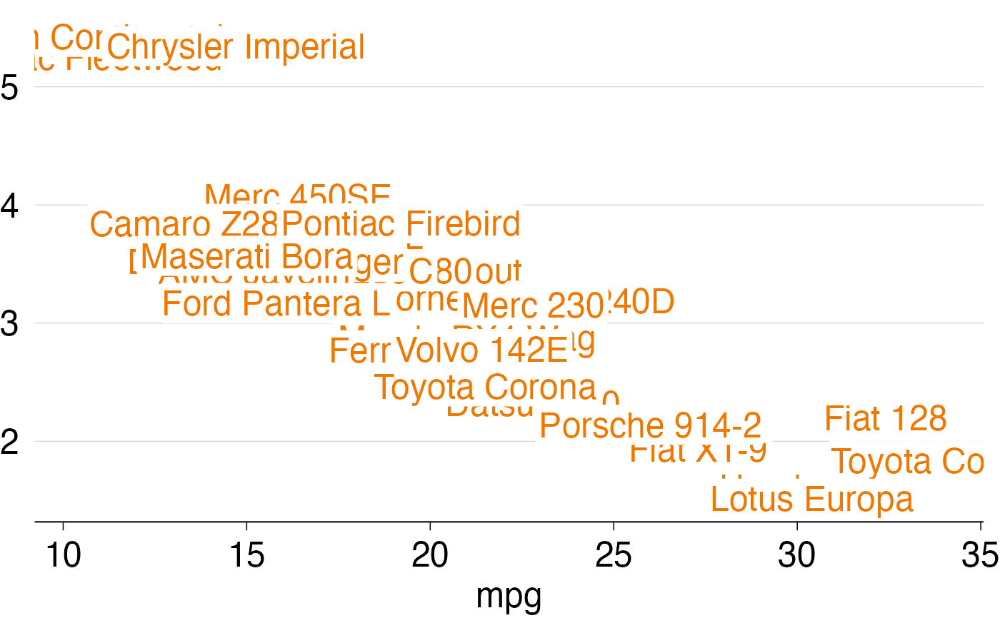
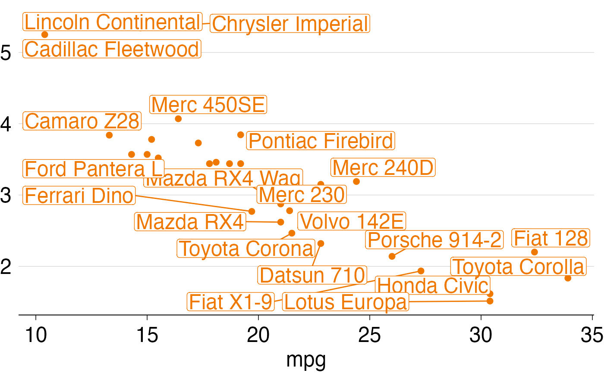

grattan_label_functions.Rd`grattan_label()` and `grattan_label_repel()` create labels using `ggplot2::geom_label()` and `ggrepel::geom_label_repel()` respectively. The labels will have no border and minimal padding, in keeping with Grattan Institute's visual style.
grattan_label(
...,
size = 18,
padding = 0.1,
lineheight = 0.8,
label.size = NA,
fill = "white"
)
grattan_label_repel(
...,
size = 18,
padding = 0.1,
lineheight = 0.8,
label.size = NA,
fill = "white"
)Arguments passed on to either `ggplot2::geom_label()` (in the
case of `grattan_label()`) or `ggrepel::geom_label_repel()` (in the case of
`grattan_label_repel()`). See ?geom_label or ?geom_label_repel.
Font size for label. Default is 18.
Amount of white padding around label, measured in "lines"
(see ?unit::grid). Default is 0.1.
Height of lines of text - smaller means the lines of text are closer together. Default is `0.8`.
Size of label border line, in mm. Default is `NA`, which means no border.
Colour of label background; default is `"white"`.
`grattan_label()` labels, just like `ggplot::geom_label()` labels, will be places at the x, y coordinates given by the data. `grattan_label_repel()` labels, just like `ggrepel::geom_label_repel()` labels, will be placed near their x, y coordinates, but will be places so that the labels don't overlap each other.
library(ggplot2)
# Create a dataset -- mtcars with rownames as column
mt <- mtcars
mt$car <- rownames(mt)
# Create a plot without labels
p <- ggplot(mt, aes(x = mpg, y = wt, label = car)) +
geom_point() +
theme_grattan()
# A chart with Grattan labels
p +
grattan_label()

# A chart with Grattan labels that are repelled from each other
p +
grattan_label_repel()
#> Warning: ggrepel: 7 unlabeled data points (too many overlaps). Consider increasing max.overlaps
